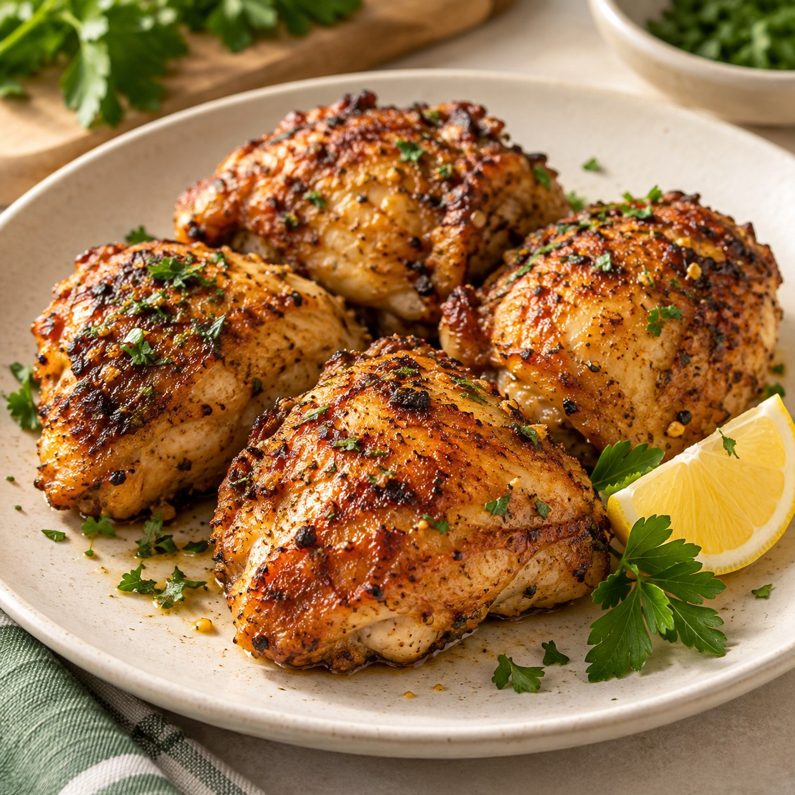
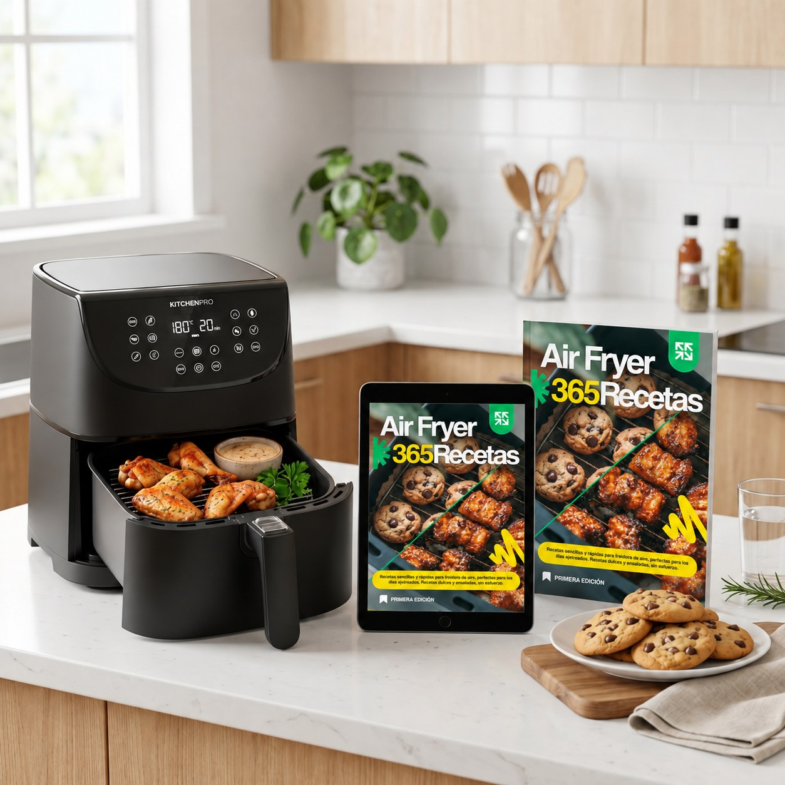
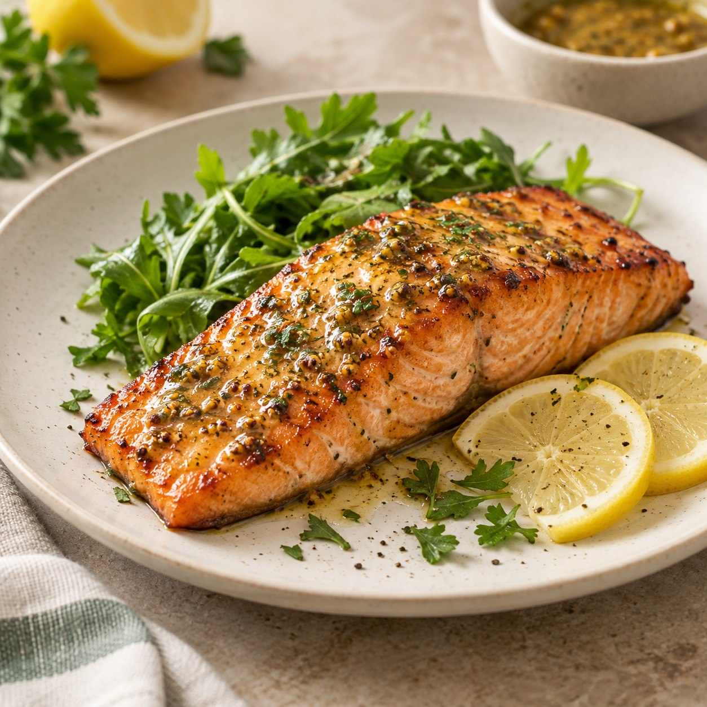
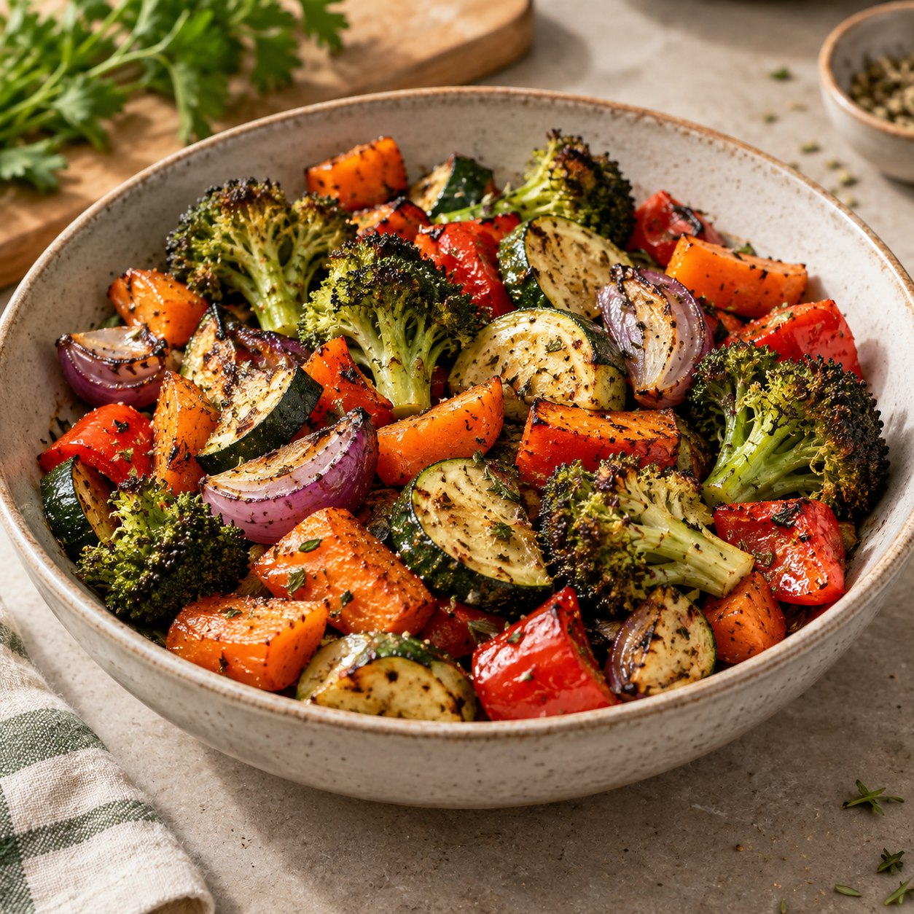
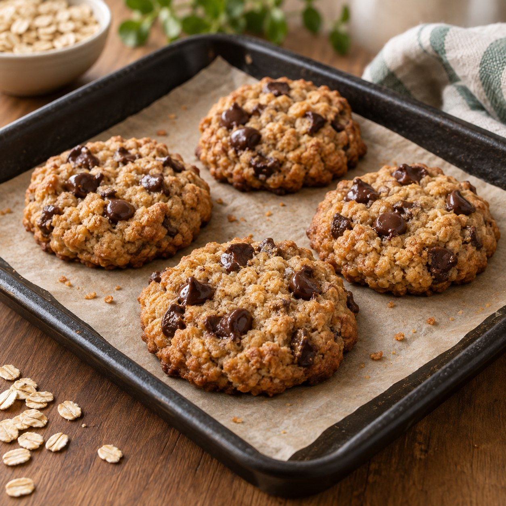
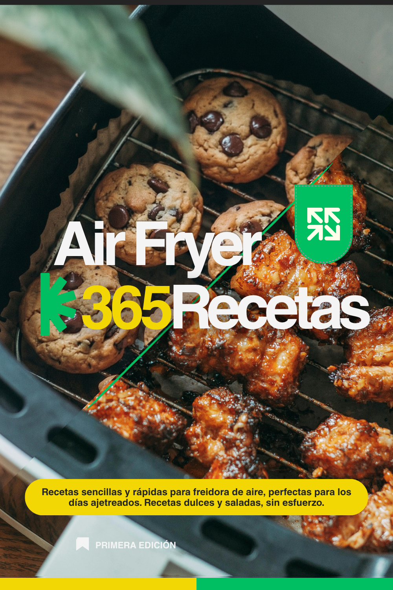

SALADA
RECETA 01
22 min
Muslos de pollo al romero
Dorados por fuera, jugosos por dentro y perfumados con romero.
365 recetas dulces y saladas en PDF con tiempos y temperaturas claras.
365 recetas dulces y saladas, con ingredientes simples, tiempos y temperaturas claras para que cocinar con tu Air Fryer sea mucho más fácil.

Papas, pollo, alguna verdura…
Sabés que podés hacer muchísimo más, pero cuando llega la hora de
cocinar, faltan ideas.

¡Es justo lo que necesitaba para no hacer siempre lo mismo, gracias! 🙌
Hice las cookies y el salmón, salieron increíbles al primer intento 👏
Los tiempos y temperaturas son exactos, me salvó las cenas de la semana ✨
Súper práctico tener las 365 recetas en el cel mientras cocino, ¡10/10! 😋
Cuando faltan ideas, es fácil volver siempre a las mismas recetas.
Terminás recurriendo a las mismas recetas de siempre.
Buscás ideas diferentes cada vez que querés cocinar.
No sabés cuánto tiempo ni a qué temperatura preparar cada cosa.
Tenés ingredientes en casa, pero no sabés cómo convertirlos en una comida.
Recetas saladas y dulces para tener variedad a mano.
Tiempos y temperaturas indicados en cada preparación.
Ingredientes fáciles de conseguir en cualquier supermercado o verdulería.
Ideas para desayunos, meriendas, comidas, acompañamientos y antojos.
Una muestra de todo lo rico que podés cocinar en tu Air Fryer.

SALADADorados por fuera, jugosos por dentro y perfumados con romero.

SALADATierno y sabroso, con un glaseado suave agridulce.

ACOMPAÑAMIENTOVegetales coloridos, dorados y llenos de sabor.

DULCECon banana madura, avena y chips de chocolate.
Esto es solo una muestra: adentro te esperan 365 ideas dulces y saladas.
Tené 365 recetas a mano y elegí según el momento, el antojo o lo que tengas en casa.
Queremos que estés conforme con tu compra. Si dentro de los primeros 7 días sentís que el recetario no es para vos, escribinos y te devolvemos tu dinero.
Un recetario digital para tener nuevas ideas a mano, con preparaciones dulces y saladas, tiempos claros e ingredientes fáciles de conseguir.

Comé rico y saludable en pocos minutos.
Información clara y directa sobre el recetario.
El recetario es un archivo digital en formato PDF. Una vez confirmado tu pago, recibís un correo electrónico con el enlace para descargarlo y guardarlo en tu celular, tablet o computadora.
Las recetas están pensadas para Air Fryer. Como cada modelo puede tener diferencias de potencia y tamaño, los tiempos pueden variar ligeramente y siempre recomendamos observar la cocción.
No. Las recetas están redactadas paso a paso y con explicaciones directas para que cualquier persona pueda prepararlas fácilmente.
Sí. El archivo PDF tiene un diseño listo para que puedas imprimir el recetario completo o las hojas que quieras tener en la cocina.
Incluye el ebook digital en PDF con las 365 recetas (dulces y saladas), la guía de tiempos y temperaturas, la guía de cuidado y las 10 recetas rápidas adicionales.
Sí, contás con 7 días de garantía. Si por cualquier motivo sentís que el recetario no es para vos, podés escribirnos y te devolvemos el dinero.